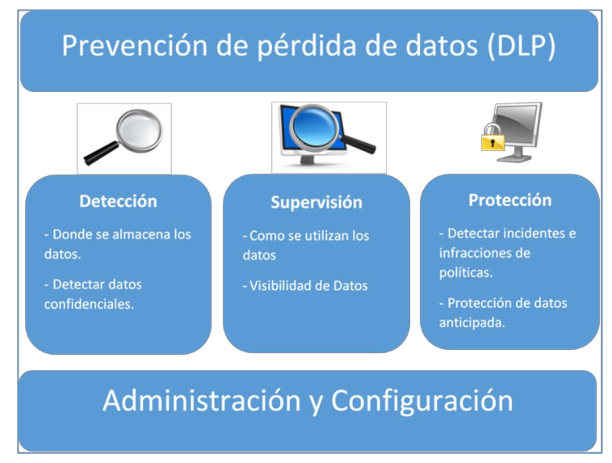
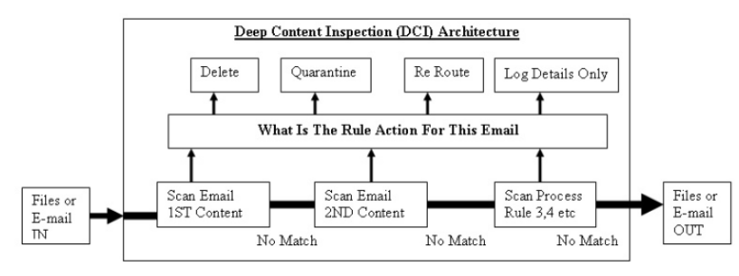

4. Prevención de fugas de información (DLP, Data Loss Prevention)
1. introducción
INCIBE: "Para entender en qué consiste una fuga de información debemos saber que la protección de la información se basa en tres principios básicos: confidencialidad (accesible solo para aquellas personas autorizadas), integridad (libre de errores y modificaciones no autorizadas) y disponibilidad (accesible cuando sea necesario para las personas o sistemas autorizados)". Entendemos por fuga de información la pérdida de confidencialidad ocasionada como consecuencia de un incidente de seguridad interno o externo (intencional o no), que le ocurre al responsable de su custodia, pudiendo, por tanto, perderse la integridad de la misma y su disponibilidad".
La fuga de información privilegiada es un hecho que se viene evidenciando desde años atrás. La fuga de información (data breaches) que han sufrido diferentes empresas y organizaciones, tanto si ocurren desde dentro (los llamados inside jobs) o desde fuera (ejecutada por atacantes externos), ha ido creciendo en número con el paso del tiempo. Estos ataques suelen tener como objetivo agencias del gobierno, páginas sociales, páginas de citas, venta online, bancos y sitios que gestionan temas relacionados con la salud (ver figura inferior).

Figura 1. Esquema DLP.
Si se pulsa la imagen inferior, se pude acceder a la versión interactiva (aquí), donde se puede filtrar según el tipo de organización y el tipo de ataque.
Figura 2. Fuga de información en diferentes organizaciones/espacios.
2. Soluciones DLP
DLP (Data Loss Prevention o Prevención de pérdida de datos) es una herramienta que previene fugas de información cuyo origen está dentro de la organización, de una manera activa y sin perder productividad.
DLP es una solución para encontrar, monitorizar y proteger la información confidencial que está almacenada a través de la red y los discos de almacenamiento de los equipos. Las soluciones DLP se utilizan para prevenir el problema de perder los datos confidenciales.
Los componentes de la solución están diseñados de la siguiente manera:
- Detección de los datos confidenciales almacenados.
- Monitorizar para que se utilizan los datos.
- Proteger los datos para evitar su pérdida.

Figura 3. Arquitectura DLP - Fuente: Radwan (2015).
3. Características de los DLP
Las características de los DLP son las siguientes:
- Precisión: los DLP tienen mecanismos para evitar generar falsos positivos e ignorar datos que no debería. Para ello, suelen incorporar inteligencia artificial la cual les permite aprender qué documentos se utilizan y qué acciones se suelen realizar sobre dichos documentos.
- Centralización: la administración de los DLP se encuentra centralizada, permitiendo así una gestión mucho más sencilla.
- Monitorización: el sistema está constantemente analizando múltiples tipos de ficheros y protocolos independientemente de la información que se esté manejando.
- Identificación: añaden marcas de agua a los documentos permitiendo identificar al responsable de dicha fuga.
Figura 4. Fullvector- DLP (Freepik).
4. Funciones de los DLP
La principal función de un DLP es la protección de la información, la herramienta se basa en un catálogo de los procesos para examinar los datos sensibles:
- Datos en uso: Son los datos usados en tiempo real por los usuarios, estos son monitorizados revisando cada acción que realizan los usuarios finales en sus equipo para protegerlos por medio de agentes instalados en los equipos. Estas aplicaciones bloquean el traslado de información.
- Datos en movimiento: Estos se trasmiten a través de una red y su protección se da en la red, analizando fragmentos en busca de patrones que verifiquen que los datos tengan autorización de su movimiento. La herramienta DLP debe ser capaz de monitorizar el tráfico de forma pasiva y así determinar si los paquetes que están en la red no infringen alguna regla que esté debidamente configurada en el DLP.
Figura 5. Datos en movimiento.
- Datos almacenados: Una funcionalidad de la herramienta DLP es la de rastrear tipos de información y localizar en dónde se almacenan en la organización. Estos se encuentran en algún medio de almacenamiento en el organismo. Una vez encontrados los datos, la herramienta DLP debe escanear su contenido en busca de datos sensibles para su protección.
Figura 6. Datos en reposo.
5. Funcionamiento de los DLP
Hay 3 tipos diferentes de DLP:
- Network DLP: este DLP se integra en los puntos de salida de datos (es decir, en un router). Una vez instalado, esta solución monitoriza, rastrea y genera informes del tráfico que hay en la red. Dichos informes muestran qué datos están siendo utilizados, quiénes están utilizando estos datos, el origen y el destino de dichos datos. Este tipo de DLP es idóneo para rastrear todo el contenido que pasa por la red.
- Storage DLP: este DLP permite mostrar los archivos que circulan por la red de la empresa. De este modo se pueden identificar los puntos sensibles y prevenir que se filtre información. Este tipo de DLP es idóneo para controlar los datos que están almacenados en la nube.
- Endpoint DLP: este DLP se instala en todos los dispositivos utilizados por los empleados permitiendo supervisar e impedir la fuga de datos a través de dispositivos externos (USB's, DVDs, etcétera), LAN o Internet.
6. Plataformas DLP en el mercado
De acuerdo a la información publicada por Gartner, las principales empresas líderes fabricantes de soluciones de DLP para el año 2016 son: GTB Tecnologies, McAfee, Intel Security, Symantec, Digital Guardian, ForcePoint y Fidelis Security.
El estudio identifica las empresas más importantes, utilizando parámetros de categorización basados en el posicionamiento, la estrategia de mercado y la eficacia en el desempeño de los objetivos. Los productos de prevención de fuga de información (Data Loss Prevention) más destacados son:
Figura 7. Gráfico de las empresas líderes en Data Loss
Prevention, según Gartner, tomado de:
http://www.gartner.com.
1. Symantec Data Loss Prevention
Utilizado por grandes empresas como; entidades financieras, sanitarias, manufactureras, energéticas e incluso gubernamentales. Proporcionan al dispositivo, terminal, redes, centro de datos, nube, etcétera., la capacidad de detectar, monitorizar y proteger datos confidenciales de virus maliciosos. Esta protección y seguridad se realiza durante y sobre los datos confidenciales que se mueven tanto físicamente como en la nube.
2. Nightfall
Tiene acceso a los servicios albergados en la nube a través de las API de dichos servicios, de esta manera puede supervisar los datos y aplicaciones sin necesidad de agentes. Es la primera plataforma DLP nativa en la nube.
Se destacan las siguientes características:
- Incluye técnicas de Machine Learning clasificando los archivos con gran precisión.
- Permite automatizar cuarentenas, alertas, ahorrando tiempo y manteniendo la seguridad de la empresa.
- Incluye gestión de incidentes, identifica datos confidenciales, reducción de falsos positivos. Analiza archivos de diferentes tipos, incluyendo archivos con datos no estructurados, cómo puede ser JSON, hojas de cálculo, etcétera. Para solucionar los problemas emplea soluciones como notificar a los administradores, borrado de archivos maliciosos, etcétera. De esta manera permite a los usuarios reducir el borrado archivos confidenciales y garantizar el cumplimiento de las normativas reguladoras.
- Está alojado en Amazon AWS y en Google Cloud.
- Cuenta con una plataforma para desarrolladores.
3. Avanan
Es una plataforma albergada en la nube que permite gestionar la seguridad de correos electrónicos. Utiliza API para escanear phishing, malware y fugas de datos.
Se destacan las siguientes características:
- Incluye técnicas de Machine Learning para capturar ataques independientemente del nivel de sofisticación de los mismos.
- Se despliega directamente en la nube, ofreciendo un alto nivel de defensa contra las amenazas internas y el correo electrónico. No hay que modificar los registros MX para utilizar Avanan. Dicha ausencia de cambios sobre los registros MX significa que es imposible que los atacantes vean si se está utilizando Avanan o no.
- Dispone de una interfaz intuitiva.
4. Bettercloud
Es una plataforma que permite administrar y securizar los servicios albergados en la nube. Para ello cuenta con varias soluciones, entre ellas un DLP.
Se destacan las siguientes características:
- Proporciona la habilidad de auditar, buscar, informar y ver todos los archivos guardados en Google Workspace, DropBox, Slack, Office 365, Namely, Zendsek, Salesforce, Okta y Box.
- Permite administrar, notificar excepciones y gestionar los privilegios de los usuarios que pertenecen al sistema.
5. McAfee Data Loss Prevention
Ayuda a evitar la pérdida de datos monitorizando todo el tiempo el equipo, también da la posibilidad de administrar agentes y actualizaciones además de poder obtener un resumen de todos los equipos donde está instalado el agente.
6. OpenDLP
OpenDLP solo está disponible para las plataforma Linux y Windows. Se destacan las siguientes características:
- Permite realizar búsquedas masivas de la información en varios equipos al mismo tiempo sin consumir una gran cantidad de recursos.
- Brinda la opción inspeccionar los contenidos de cada uno de los ficheros.
- Consta de una interfaz GUI Web.
OpenDLP realiza básicamente 3 tipos de búsquedas:
- Búsquedas sin despliegue de un agente de ficheros en la máquina objetivo.
- Búsquedas mediante el despliegue de agente en la máquina remota.
- Búsqueda sin despliegue de agente en bases de datos Mysql y MSSQL.
7. DLP para test de pruebas
Para iniciarse en DLP, existe uno para test de prueba, el enlace es el siguiente:
El problema de los DLP de prueba es que, una cosa es el software que monitorice red, correo, portapapeles, screenshots, etcétera, y otra cosa son las reglas. Por lo general, cuando se usan versiones "free" van sin reglas, y lo costoso e interesante de los DLP son las reglas.
Para estudiar las reglas, naidlp es un DLP en entorno gráfico.
8. Ejemplos prácticos
Prevención de pérdida de datos y Microsoft Teams
Si se desea que una organización tenga Prevención de pérdida de datos de Microsoft Purview (DLP), se pueden definir directivas que impidan que los usuarios compartan información confidencial en un canal de Microsoft Teams o una sesión de chat. Estos son algunos ejemplos de cómo funciona esta protección:
- Ejemplo 1: Protección de la información confidencial en los mensajes.
- Ejemplo 2: Protección de información confidencial en documentos.
- Ejemplo 3: Protección de las comunicaciones en canales compartidos de Teams.
Licencias DLP para Microsoft Teams. Las funcionalidades de prevención de pérdida de datos incluyen mensajes de canal y chat de Microsoft Teams, incluidos los mensajes de canal privado para:
- Office 365 E5/A5/G5
- Microsoft 365 E5/A5/G5
- Microsoft 365 E5/A5/G5 Information Protection y gobernanza
- Microsoft 365 E5/A5/G5/F5 Cumplimiento y seguridad & de F5 Cumplimiento
- Office 365 y Microsoft 365 E3 incluyen protección DLP para SharePoint Online, OneDrive y Exchange Online. Esto también incluye los archivos que se comparten a través de Teams porque Teams usa SharePoint Online y OneDrive para compartir archivos.
9. Referencias
Obra publicada con Licencia Creative Commons Reconocimiento No comercial Compartir igual 4.0